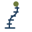

Vision
To be a leading research hub in the region for soft and continuum robotics, where rigorous mechanics and modern control theory meet to create robots that work safely alongside people and inside constrained, delicate environments.
Department of Mechanical Engineering · University of Torbat Heydarieh
Advanced Robotics and Control Systems Laboratory
Advancing Soft and Continuum Robotics
Piecewise-constant-curvature model; the controller maps the tip error to curvature rates with a damped least-squares Jacobian inverse, ẋ = ẋd + Kp(xd − x), plus a null-space term that keeps the robot straight. Curvature and actuator speed are limited. Switch Feedforward off to see how the gain Kp alone decides the tracking error.
01
ARCSLAB studies robots that bend instead of rotate — slender continuum manipulators and compliant soft machines — and the modeling, sensing and control methods that make them precise, safe and useful.
To be a leading research hub in the region for soft and continuum robotics, where rigorous mechanics and modern control theory meet to create robots that work safely alongside people and inside constrained, delicate environments.

02
Faculty, graduate and undergraduate researchers of ARCSLAB. Click a person to open the profile.
03
Theses, student projects and external projects — each linked to the researcher's profile.
04
Journal papers, conference papers and books by the lab's faculty and students — updated automatically every week.
05
Course hubs, handbooks and lab classes taught by ARCSLAB faculty — plus a free academy of 700+ video tutorials.
More than 700 Persian video tutorials by Dr. Goharimanesh — engineering mathematics, control, robotics, vehicle dynamics, MATLAB, Python and research methods — organised by category and series, with search, the most-watched videos, QR cards and saved lists.
06
Robots, fabrication equipment, workbenches and software available to lab members.
07
Research partners outside the university.
08
ARCSLAB exists thanks to people who believed in it. We remember them with gratitude.
09
Upcoming conferences, visits, seminars and lab news.
10
Interested in joining ARCSLAB as a student, or in collaborating with us? We would be glad to hear from you.